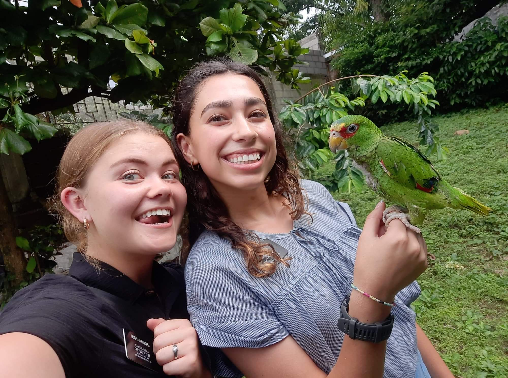

<!DOCTYPE html>
<html lang="en">
    <head>
        <meta charset="utf-8" />
        <meta name="viewport" content="width=device-width, initial-scale=1, shrink-to-fit=no" />
        <meta name="description" content="" />
        <meta name="author" content="" />
        <title>Clean Blog - Start Bootstrap Theme</title>
        <link rel="icon" type="image/x-icon" href="assets/favicon.ico" />
        <!-- Font Awesome icons (free version)-->
        <script src="https://use.fontawesome.com/releases/v6.3.0/js/all.js" crossorigin="anonymous"></script>
        <!-- Google fonts-->
        <link href="https://fonts.googleapis.com/css?family=Lora:400,700,400italic,700italic" rel="stylesheet" type="text/css" />
        <link href="https://fonts.googleapis.com/css?family=Open+Sans:300italic,400italic,600italic,700italic,800italic,400,300,600,700,800" rel="stylesheet" type="text/css" />
        <!-- Core theme CSS (includes Bootstrap)-->
        <link href="css/styles.css" rel="stylesheet" />
    </head>
    <body>
        <!-- Navigation-->
        <nav class="navbar navbar-expand-lg navbar-light" id="mainNav">
            <div class="container px-4 px-lg-5">
                <a class="navbar-brand" href="index.html">Ashli Reichner</a>
                <button class="navbar-toggler" type="button" data-bs-toggle="collapse" data-bs-target="#navbarResponsive" aria-controls="navbarResponsive" aria-expanded="false" aria-label="Toggle navigation">
                    Menu
                    <i class="fas fa-bars"></i>
                </button>
                <div class="collapse navbar-collapse" id="navbarResponsive">
                    <ul class="navbar-nav ms-auto py-4 py-lg-0">
                        <li class="nav-item"><a class="nav-link px-lg-3 py-3 py-lg-4" href="index.html">Home</a></li>
                        <li class="nav-item"><a class="nav-link px-lg-3 py-3 py-lg-4" href="contact.html">Contact</a></li>
                    </ul>
                </div>
            </div>
        </nav>
        <!-- Page Header-->
        <header class="masthead" style="background-image: url('assets/img/EXPERIENCE.jpeg')">
            <div class="container position-relative px-4 px-lg-5">
                <div class="row gx-4 gx-lg-5 justify-content-center">
                    <div class="col-md-10 col-lg-8 col-xl-7">
                        <div class="post-heading">
                            <h1>Experience</h1>
                            <h2 class="subheading">A look at the roles that helped me grow personally and professionally.

</h2>
                            <span class="meta">
                                
                            </span>
                        </div>
                    </div>
                </div>
            </div>
        </header>
        <!-- Post Content-->
        <article class="mb-4">
            <div class="container px-4 px-lg-5">
                <div class="row gx-4 gx-lg-5 justify-content-center">
                    <div class="col-md-10 col-lg-8 col-xl-7">
                        <p>Throughout my academic and professional journey, I've engaged in diverse roles that have honed my skills in customer service, event planning, and team collaboration. Working with organizations like Marriott and CUTCO provided me with hands-on experience in hospitality and sales, enhancing my ability to connect with clients and manage responsibilities effectively.

<br>
                            <br>
                            
                            In addition to my professional roles, I've actively participated in volunteer work that emphasizes my commitment to community and service. Collaborating with groups such as Volunteers of America allowed me to contribute to meaningful causes, further developing my organizational and interpersonal skills.

<br>
                            <br>
                            These experiences, both professional and volunteer, have equipped me with a well-rounded skill set, preparing me to take on future challenges with confidence and dedication.</p>
                        <br>
                        <ol>Revere Health 
                            <br>
                            <li>Escort patients to exam rooms and prepare them for scans or procedures, ensuring a smooth workflow.
                            </li>
                            <li>Utilize multiple online systems to accurately document and verify patient information.</li>
                            <li>Perform vital health assessments, including blood pressure checks, oxygen level readings, IV placements, EKG tests, and blood draws.</li>
                            <li>Quickly assess and resolve challenges in high-pressure situations to maintain patient care efficiency.</li>
                       <br>
                        </ol>
                        <ol>Mentors International 
                            <br>
                            <li>Researched and compiled data on job opportunities, online learning programs, and accessible English courses for underserved individuals.
                            </li>
                        <li>Developed innovative strategies to improve project execution and achieve weekly objectives.

                            </li>
                        <li> Organized and led recurring meetings via Google Meet and Zoom to coordinate team efforts.
                            </li> 
                        <li>Delivered presentations to the Mentors International board, effectively communicating research findings and proposals.
                            </li>
                        <br>
                        </ol>Vector Marketing
                        <ol>
                            <li>Conduct virtual and in-person sales presentations, tailoring demonstrations to meet individual client needs.
                            </li>
                            <li>Build and maintain customer relationships by following up with past clients and generating new leads.
                            </li>
                            <li>Consistently meet and exceed sales targets, achieving over $20,000 in total sales.
                            </li>
                            <li>Participate in weekly team meetings, setting strategic sales goals and sharing best practices.
                            </li>
                        </ol>
                        <br>
                        <ol>Full Time Mission- Church of Jesus Christ of Latterday Saints
                        
            
                            <li>Served in Chiapas, Mexico, providing community service, mentorship, and faith-based education.
                            </li>
                            <li>Developed strong communication and interpersonal skills while working with diverse populations.</li>
                        </ol> 
                    <br><br>
                       
                        <a href="#!"></a>
                        <span class="caption text-muted">My companion and I opening up a new area in Huixtla, Chiapas.</span>
                
                    </div>
                </div>
            </div>
        </article>
        <!-- Footer-->
        <footer class="border-top">
            <div class="container px-4 px-lg-5">
                <div class="row gx-4 gx-lg-5 justify-content-center">
                    <div class="col-md-10 col-lg-8 col-xl-7">
                        <ul class="list-inline text-center">
                            <li class="list-inline-item">
                                <a href="#!">
                                </a>
                            </li>
                            <li class="list-inline-item">
                                <a href="https://www.facebook.com/profile.php?id=100060995060660" target="_blank" rel="noopener noreferrer">
                                <span class="fa-stack fa-lg">
                                    <i class="fas fa-circle fa-stack-2x"></i>
                                    <i class="fab fa-facebook-f fa-stack-1x fa-inverse"></i>
                                </span>
                                </a>
                            </li>
                            <li class="list-inline-item">
                                <a href="#!">
                                    <span class="fa-stack fa-lg">
                                    </span>
                                </a>
                            </li>
                        </ul>
                        <div class="small text-center text-muted fst-italic">Copyright &copy; Ashli Reichner 2025</div>
                    </div>
                </div>
            </div>
        </footer>
        <!-- Bootstrap core JS-->
        <script src="https://cdn.jsdelivr.net/npm/bootstrap@5.2.3/dist/js/bootstrap.bundle.min.js"></script>
        <!-- Core theme JS-->
        <script src="js/scripts.js"></script>
    </body>
</html>
